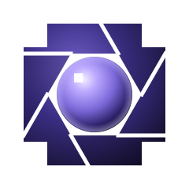

<!doctype html>
<!--
  One document icon, from the PIXL Brand Kit's "Document icons" board: the
  page Finder and Explorer show for a photo that opens in Playroom.
    doc-icon.html?fmt=RAW&tone=source&size=256
  `fmt` is the label, `tone` is `source` (purple, a format Playroom reads),
  `output` (white, one it writes; TIFF by default) or `project` (Playroom's
  own `.pixl` project: the page itself lit in the brand's purple), `size` the square canvas
  in px. The page (200×256 at design size) sits centred in the square with
  transparent margins, as macOS document icons do. At 64 px and below (32 pt
  on a Retina screen) the label cannot be read, so the page carries the small
  mark and a colour bar instead (the board's "at 32 px" variant). Rendered by scripts/doc-icons.mjs.
-->
<html>
  <head>
    <meta charset="utf-8" />
    <style>
      @font-face {
        font-family: 'Space Grotesk';
        font-weight: 300 700;
        src: url('../../node_modules/@fontsource-variable/space-grotesk/files/space-grotesk-latin-wght-normal.woff2')
          format('woff2');
      }
      html,
      body {
        margin: 0;
        overflow: hidden;
        background: transparent;
      }
      .canvas {
        position: relative;
        overflow: hidden;
      }
      .page {
        position: absolute;
        transform-origin: 0 0;
      }
      .page > * {
        position: absolute;
      }

      /* ── the page at design size, 200×256 ── */
      .big {
        width: 200px;
        height: 256px;
        filter: drop-shadow(0 4px 8px rgba(0, 0, 0, 0.45));
      }
      .big .sheet {
        inset: 0;
        clip-path: polygon(0 0, 76% 0, 100% 19%, 100% 100%, 0 100%);
        background: linear-gradient(160deg, #1a1822, #0c0b10 60%, #08070b);
        box-shadow: inset 0 0 0 var(--hair) rgba(255, 255, 255, 0.12);
      }
      .big .fold {
        right: 0;
        top: 0;
        width: 48px;
        height: 48px;
        background: linear-gradient(225deg, transparent 50%, #2a2636 50%, #3a3450);
      }
      .big .mark {
        left: 52px;
        top: 58px;
        width: 96px;
        height: 96px;
        /* The mark's loose pixels (its top-right corner of the 240 box) stay off
           the page: nothing else of the mark lies above y 48 right of x 192. */
        clip-path: polygon(0 0, 81.6% 0, 81.6% 18.3%, 100% 18.3%, 100% 100%, 0 100%);
      }
      .big .rule {
        left: 20px;
        right: 20px;
        bottom: 58px;
        height: var(--hair);
        background: linear-gradient(
          90deg,
          var(--ink) 0,
          var(--ink-35) 40px,
          rgba(255, 255, 255, 0.1) 120px
        );
      }
      .big .label {
        left: 20px;
        bottom: 24px;
        font-family: 'Space Grotesk', system-ui, sans-serif;
        font-size: 22px;
        font-weight: 700;
        line-height: 1;
        letter-spacing: 0.2em;
        color: var(--ink);
      }

      /* ── a .pixl project: Playroom's own document, the page lit from within ── */
      .big.project .sheet {
        background:
          radial-gradient(120% 70% at 50% 38%, rgba(157, 139, 234, 0.38), transparent 70%),
          linear-gradient(160deg, #2b2346, #15112a 60%, #0d0b18);
        box-shadow: inset 0 0 0 var(--hair) rgba(157, 139, 234, 0.45);
      }
      .big.project .fold {
        background: linear-gradient(225deg, transparent 50%, #6c5bc4 50%, #9d8bea);
      }
      .small.project .sheet {
        background: linear-gradient(160deg, #2b2346, #15112a);
        box-shadow: inset 0 0 0 var(--hair) rgba(157, 139, 234, 0.6);
      }

      /* ── the page at 32 px, 24×32; laid out in whole pixels by the script ── */
      .small .sheet {
        inset: 0;
        clip-path: polygon(0 0, 72% 0, 100% 22%, 100% 100%, 0 100%);
        background: #121117;
        box-shadow: inset 0 0 0 var(--hair) rgba(255, 255, 255, 0.2);
      }
      .small .bar {
        background: var(--ink);
      }
    </style>
  </head>
  <body>
    <div class="canvas" id="canvas">
      <div class="page" id="page"></div>
    </div>
    <script>
      const q = new URLSearchParams(location.search)
      const fmt = (q.get('fmt') || 'RAW').toUpperCase()
      const tone = q.get('tone') || (fmt === 'TIFF' ? 'output' : 'source')
      const size = Math.max(16, Number(q.get('size')) || 256)
      const small = size <= 64
      const ink =
        tone === 'output'
          ? ['#ebe9f3', 'rgba(235,233,243,.35)']
          : tone === 'project'
            ? ['#f1edff', 'rgba(241,237,255,.4)']
            : ['#9d8bea', 'rgba(157,139,234,.35)']

      const canvas = document.getElementById('canvas')
      const page = document.getElementById('page')
      canvas.style.width = canvas.style.height = size + 'px'
      document.body.style.width = document.body.style.height = size + 'px'
      page.style.setProperty('--ink', ink[0])
      page.style.setProperty('--ink-35', ink[1])

      page.className = 'page ' + (small ? 'small' : 'big') + (tone === 'project' ? ' project' : '')
      if (small) {
        // The board's 32 px page (a pixel narrower, so it halves evenly),
        // snapped to whole pixels at 16, 32 and 64: the full height of the square.
        const k = size / 32
        const px = (v) => Math.max(1, Math.round(v * k)) + 'px'
        const m = Math.round(16 * k)
        Object.assign(page.style, {
          left: 4 * k + 'px',
          top: 0,
          width: 24 * k + 'px',
          height: size + 'px'
        })
        page.style.setProperty('--hair', '1px')
        page.innerHTML = `<div class="sheet"></div><div class="bar"></div>
          `
        Object.assign(page.querySelector('.bar').style, {
          left: px(3),
          right: px(3),
          bottom: px(6),
          height: px(3)
        })
        Object.assign(page.querySelector('.mark').style, {
          left: (24 * k - m) / 2 + 'px',
          top: px(6),
          width: m + 'px',
          height: m + 'px'
        })
      } else {
        // Design size → the square: the page is 92% of its height, with room
        // for the shadow below. Hairlines stay one device pixel.
        const k = (size * 0.92) / 256
        page.style.transform = `translate(${(size - 200 * k) / 2}px, ${size * 0.03}px) scale(${k})`
        page.style.setProperty('--hair', 1 / k + 'px')
        page.innerHTML = `<div class="sheet"></div><div class="fold"></div>
          
          <div class="rule"></div><div class="label"></div>`
        page.querySelector('.label').textContent = fmt
      }
    </script>
  </body>
</html>
